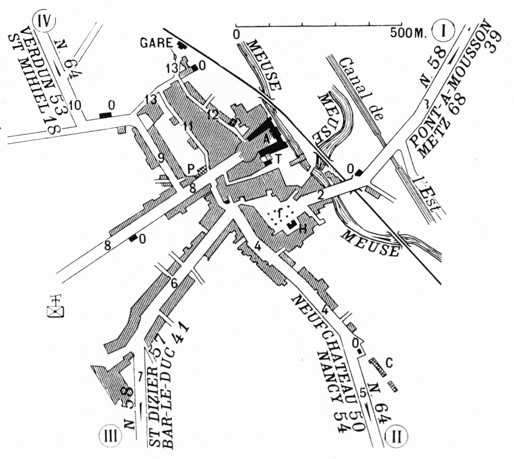

Plan of Commercy

| Plan of Commercy | |
| Arbitrary Signs | |
| A.—Old Château, now a Barracks. C.—Barracks. H.—Hôtel-de-Ville. O.—Octrois. P.—Sous-Préfecture. T.—Theatre. 1.—Place de l’Hôtel-de-Ville. 2.—Rue du Pont des Religieuses. 3.—Road to Metz. |
4.—Rue des Capucins. 5.—Road to Nancy. 6.—Rue Levée-de-Breuil. 7.—Road to Bar-le-Duc. 8.—Rue Carnot. 9.—Rue de Lisle. 10.—Road to Verdun. 11.—Rue du Four. 12.—Rue de l’Eglise. 13.—Rue de la Gare. |